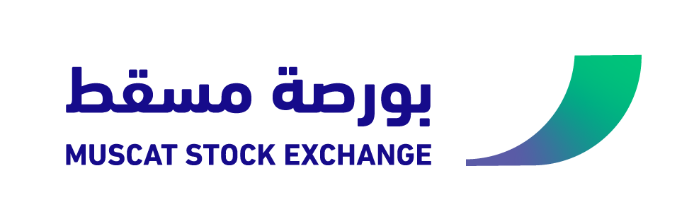
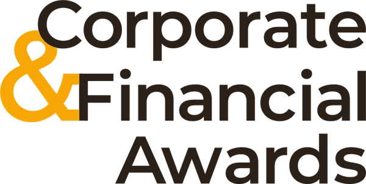

- 2Grand Award
- 4Gold
- 3Silver
- 1Bronze
- 2Honors
Awards won between 2023 and 2026
Frisson Writing helps listed companies across the Gulf shape how they present themselves to investors and stakeholders, developing the narrative and key messages behind their reports, presentations and leadership communications.
Experience with companies listed on



Reports developed by Frisson Writing's founder have won at two leading international competitions for corporate reporting.
Awards won between 2023 and 2026

Awards won between 2023 and 2026

Mikhail Seleznev is the founder of Frisson Writing. He set up the company in 2026 after six years at a leading corporate reporting agency while based in London and Dubai. He helps listed companies decide what to emphasise in their investor-facing communications and which facts and examples make the point most clearly.
His work involves interviewing senior executives and working closely with investor relations, sustainability and communications teams. This gives him a feel for the culture of each business and the language that sounds natural to the people who run it.
His background spans financial modelling, valuation and sustainability reporting. That combination helps him explain what drives a company's results and connect its financial performance with its operations and sustainability priorities.
A short note on the document and the timeline is enough to start.